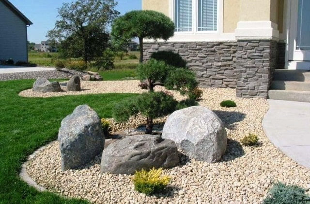

List of FAQs and Answers
As from day one in business, we have experienced a great deal of attention and interest in our landscaping services, with tons of questions before, during, and after our free site visits. So, we have summarized below the ten most frequently asked questions made by friends, clients and associates, along with our answers. It is by no means final, just a concious exercise to remain transparent.
Why are Japanese Zen styled gardens and landscapes timeless?
The famous "Garden of Six Attributes" or "Kenrokuen" was created in the 1620s, and is considered the oldest Japanese garden in the entire world. Next, we have the "Plum Blossom Garden" or "Koishikawa Korakuen", an exquisite traditional Japanese garden completed in 1669. These are just two references to prove the point that timelessness is a key characteristic of Japanese landscaping. But that is not it, for example, the "Tofukuji" Gardens' original plans date back to the 13th century, but were modernized in 1939.
What are the main features of Japanese Zen styled gardens and landscapes?
Contrary to what we may find on the web nowadays, traditional elements in a Japanese garden and landscape include waterfalls, sand, gravel, stones, rocks, islands, hills, bridges, streams, fish, paths, stone lanterns, bamboo, moss, ponds, trees, fences, gates, basins, other. It all depends on the type of garden chosen by the creator. Moreover, they may be styled as rock or dry gardens, hill and pond gardens, tea gardens, and stroll gardens.
How can you bring nature indoors with Japanese Zen styled gardens and landscapes?
It is true that contemporary homes do not have great outdoors as land is a highly priced commodity. Yet, you can have a small Japanese garden in an interior courtyard or balcony. Traditionally these tiny gardens are meant to be seen, not entered, with the features of gardens in miniature, designed to create tranquility and inspiration. In fact, you can have a Japanese garden in a small box right in your bedroom or office.
Where can you learn more about Japanese Zen styled gardens and landscapes?
We can say that Japanese gardens began in the 7th century and are still evolving. You could start by reading books and websites with useful information about their design, history and periods. Additionally, you could take a trip to Kyoto or Tokyo, or visit the Japanese gardens in North America. The choice will always be yours. Just keep in mind that there is no perfect garden. In essence, they all are perfect.

Why should you consider having your own Japanese Zen styled gardens and landscapes?
The main reason for this is the personal transformation you can experience while planning and creating your own space, finding features you like and incorporating them as you go, followed by the realization of its daily or monthly or yearly maintenance, just for enjoyment and relaxation. Your Japanese garden is your special place where peace and serenity meet your most basic needs for self expression.
Where in North America can you find Japanese Zen styled gardens and landscapes?
There are options for those of us with a limited budget and plenty of family responsibilities. For example, here in Canada, we have: Nitobe Memorial Garden in Vancouver, BC; the University of Alberta Botanic Garden in Edmonton, AB; Nikka Yuko Japanese Garden in Lethbridge, AB; the Japanese Garden and Pavilion in Montreal, QC; and Kariya Park in Mississauga, ON. The list is quite extensive if you decide to visit the U.S.

What is the secret behind Japanese Zen styled gardens and landscapes?
Well, if we told you, then it would not be a secret, right? All we can say is that the secret is hidden in plain sight. So, you may ask again: Is it the pruning of the trees and shrubs, or the raking of the white gravel, or the shape of koi ponds, or the wooden gates, or the bamboo fences, or the stone lanterns, or the type of moss, or any other thing that make a Japanese garden so especial? You will have to experience it first-hand in order to make sense of what we are saying here.
How can you create a Japanese Zen styled garden and landscape you can be proud of?
Regardless of what you may find on the web, Japanese gardens have no religious motive nowadays. Instead, they attempt to imitate scenic beauty in miniature or reinterpret a garden from literary texts. The key attributes include spaciousness, seclusion, artifice, antiquity, waterways, and panorama. The historical periods in Japan influenced garden design and mirrored society.
Why would you make your dreamed Japanese Zen styled gardens and landscapes a reality?
It might be for personal realization or just for fun. But every person has a different drive to accomplish their goals. It has nothing to do with how much wealth one might have or wish to own. Ignore those ads or lousy videos about what you will get with a Japanese garden and landscape, and ask yourself: What does this mean to me personally? Why would I do this? The answer will always be the right one.

How much should you spend to have a great Japanese and Zen styled garden and landscape?
We cannot ask you to spend $50,000 or $100,000 or $150,000 in building a Japanese Zen styled garden and landscape at your real estate property when your current affairs demand more attention and care. But, we can certainly say that you can start building your Japanese garden with only $1,000. They can be designed to create a peaceful environment for those suffering from anxiety or stress.
If You Have Additional Questions, Please Send Us an Email or Text
We will be very happy to answer your message within 5 business days